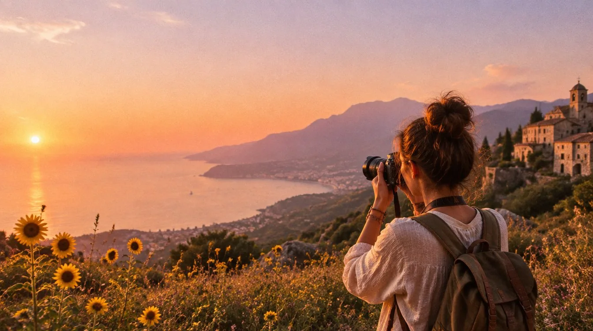
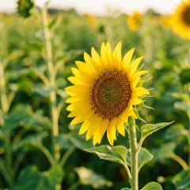
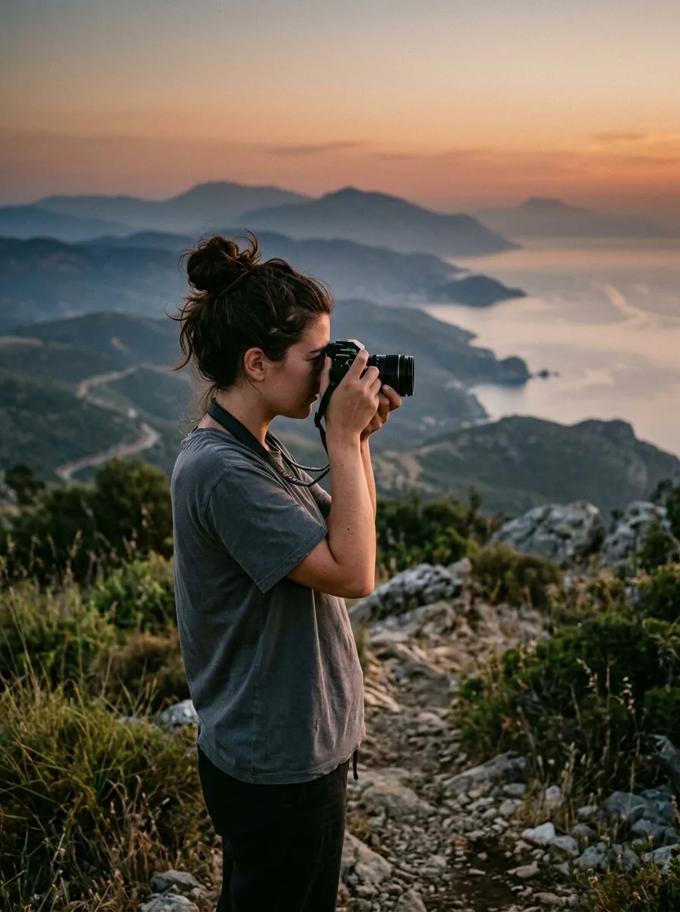

Život nas vezuje
i povezuje
nit po nit… ♡
i povezuje
nit po nit… ♡
MOJ RAD
Više od fotografija.
To su trenuci, ljudi,
mesta i osećanja. ♡

JOURNAL
Pogledaj sve →O MENI
Zovem se Isidora, ali svi me zovu Doski. Studentkinja sam novinarstva, zaljubljenik u fotografiju, putovanja i lepe priče. Kroz svoj objektiv tražim autentične trenutke, ljude i mesta koja imaju dušu.
Hajde da stvaramo lepe priče! ♡
